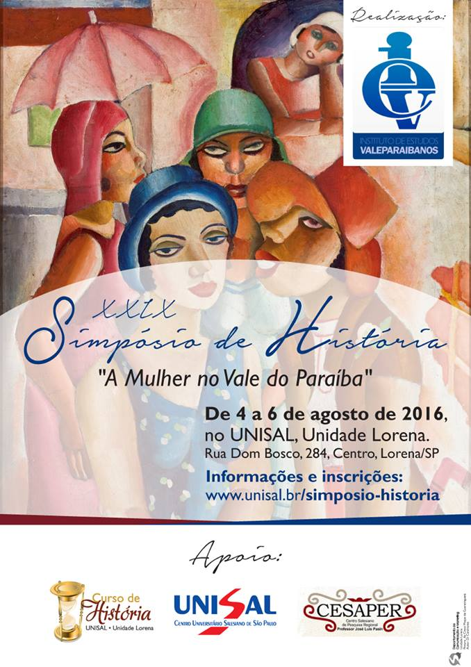

Mulheres do Vale do Paraíba
Últimas Notícias
14 de Maio de 2016
Pré-Simpósio de Resende
Reunião para preparação do pré-simpósio do Instituto de Estudos Valeparaibanos em Resende. O tema do XXIX Simpósio é "A mulher na história do Vale do Paraíba". A Academia Barramansense de História faz parte da comissão organizadora, juntamente com a Academia Resendense de História, Academia Itatiaiense de História, Instituto Campo Belo, Unisal, e a Fundação de Cultura de Resende. o Pré- Simpósio está previsto para 04 a 06 de agosto.
12 de Dezembro de 2015
Pré-Simpósio em Cruzeiro
O Instituto de Estudos Valeparaibanos e o Museu Major Novais realizaram o II Pré–Simpósio alusivo ao XXIX Simpósio de História do Vale do Paraíba “Vale do Paraíba: A História das Mulheres”, realizado no dia 12 de dezembro de 2015 às 16h no Museu Major Novaes em Cruzeiro.Com a seguinte programação. O olhar da mulher sobre a política em Cruzeiro entre as décadas de 1970 a 1990.Por Maria Umbelina Pinto de Souza Mendes A experiência social da mulher cruzeirense nas letrasPor Aurora MotaLançamento dos LivrosDossiê Itamaracá. Autora: Joana Côrtes Rolemberg (Vencedora da 2ª edição do Prêmio Memórias Reveladas do Arquivo Nacional).
12 de Setembro de 2015
Pré-Simpósio de Lorena
O Instituto de Estudos Valeparaibanos e o Curso de Licenciatura em História do Centro UNISAL-Lorena realizam o I Pré–Simpósio alusivo ao XXIX Simpósio de História do Vale do Paraíba “Vale do Paraíba: A História das Mulheres”, realizado no dia 12 de setembro de 2015 às 15h no Salão do Júri no Centro UNISAL de Lorena.Com a seguinte programação: Palestra “A obra de Ruth Guimarães no movimento literário regionalista brasileiro” Por Joaquim Maria Botelho; Lançamento dos Livros Dona Ruth - Crônicas de Ruth Guimarães. Uma publicação da Academia Cachoeirense de Letras e Artes. Marques de Paraná – A vida pública e privada de “El Rei” Honório Hermeto Carneiro de Leão. Autor: Dr. Eduardo Cesar Werneck.Uma janela no tempo: “Os Godoy Fleming” no Embaú.Autor: Prof. Esp. Eddy Carlos de Souza Vicent


Inicio do XXIX
Simpósio de história
do Vale do Paraíba